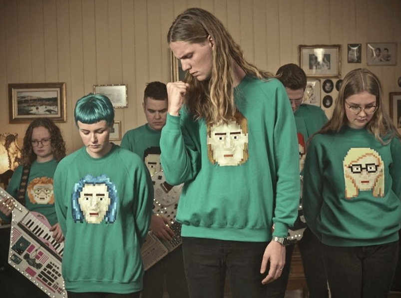

Pirmąją vietą lažybininkų lentelėse nugvelbė islandai!
3 kovo, 2020
Iki šiol Europos favoritais buvusiems „The Roop“ su daina „On fire“ lažybininkai prognozavo pirmąją vietą. Tačiau antradienį jie nusileido islandams, antroje vietoje atsidūrė rusai, o „The Roop“ liko trečioje...